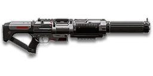

← Back to the MG-H1 Watchman comparison
Sage Guide · Terran Republic · Heavy Assault
The Terran Republic's high-speed LMG: 857 rounds per minute out of a 125-round drum. No certs are free here — it costs 1,000 — but this page teaches you to win fights with it today.
The one-line verdict: the fastest-firing LMG in the game, and it feels like it — a wall of small bullets that shreds up close and stays honest out to 35 metres. But every bullet is small, the first shot kicks hard, and the reload takes an age. Burst it like a rifle and it will carry you.

The MG-H1 Watchman · Terran Republic · 125-round magazine · 1,000 certs / 699 DBC
Picture the scene, because you've probably lived it: you're sprinting across a courtyard, an enemy appears, and you do everything at once — hold the trigger down while you're still running, then press aim-down-sights (ADS) a split-second later, finger still down. The sight picture snaps in, it looks precise… and your bullets spray everywhere except the man in your crosshair. He kills you. It feels like the game cheated. It didn't — here's what actually happened.
Sprinting is the least accurate state in the game: your cone of fire starts at 7.0° — fully bloomed, the widest it can ever be.
You press ADS mid-hold — and nothing resets. The scope only gives you a precise picture; the bullets keep flying out of the wide cone you built while running and hipfiring.
That's the whole mystery: accurate-looking aim, wildly inaccurate gun. At 857 RPM the Watchman empties those wild rounds fast — a whole burst gone before you notice.
You started firing from a sprint, from the hip. Sprinting is the least accurate state in the game: your cone of fire starts at 7.0° — fully bloomed, the widest it can ever be. Every shot you fire from the hip widens it further still (+0.10° per shot).
Then you pressed ADS mid-hold — and nothing reset. Aiming down sights does not shrink a cone of fire that is already bloomed. The scope only gives you a precise picture; the bullets keep flying out of the wide cone you built while running and hipfiring. That's the whole mystery: accurate-looking aim, wildly inaccurate gun.
Two timers stack the deck further: your gun needs about 0.3 s to settle after a sprint, and raising the sight itself takes ~0.15 s. Trigger held through all of it means your first half-second of fire is pure confetti — and at 857 RPM, half a second is seven rounds.
1 · Feet. Let go of sprint (and the trigger, if you're already holding it). Stop, or drop into a strafe — anything but a full sprint.
2 · Sight. Press ADS and let the sight come up. This takes a heartbeat — that's fine, your overshield (F) covers it.
3 · Trigger. Now fire. Starting from the aimed cone of 0.25°, your first shots land where the dot points, and you control the bloom from zero instead of inheriting a maxed-out cone.
Stop → aim → fire. If you take one habit from this entire page, take this one. You'll practise exactly this rhythm in the simulator in section 04.
Release sprint and the trigger. The gun needs about 0.3 s to settle — the cone starts closing the moment your feet stop.
Press ADS and let the sight come up — about 0.15 s. Now the picture and the cone agree: a tight 0.25° to start from.
Now fire — in bursts of 5. You control the bloom from zero instead of inheriting a maxed-out cone, so the rounds go where the dot points.
Every enemy infantry has 1,000 health (500 shield + 500 health). Your bullet does 125 damage up close, fading to 100 at long range. Headshots count double, leg shots count less (×0.9). That gives you three numbers worth memorising — and one warning: your bullets are the smallest in the LMG class, so you need more of them than anyone else.
| Range | Damage | Head | Chest | Legs | Chest vs shielded Heavy |
|---|---|---|---|---|---|
| Close · 0–10 m | 125 | 4 | 8 | 9 | 12 |
| Mid · 10–35 m | 125→111 | 4–5 | 8–9 | 9–10 | 12–14 |
| Far · 35–55 m+ | 111→100 | 5 | 9–10 | 10–12 | 14–15 |
Perfect-accuracy times to kill: 4 headshots ≈ 0.21 s, 8 chest shots ≈ 0.49 s up close. In real fights you'll land maybe half your rounds — still, this is why the head matters so much on this gun: four head hits end a fight in a fifth of a second, while ten chest hits at range take 0.63 s.
Full power to 10 m, then a steady slide to minimum at 55 m. The gold line shows Soft Point Ammunition, which stretches full power to 15 m.
One gun, four fighting styles. The right technique changes with distance — use the range finder below to see what your bullets do at any range, then learn the four bands underneath it.
How to fight hereAim down sights at the upper chest and neck. Fire in bursts of 5 — your recoil climbs into the head for free damage.
Aim: centre of the chest, from the hip. Keep moving.
Scoping in costs you time and halves your move speed — at arm's length that gets you killed. The Watchman's hipfire is honest for an LMG, and at 857 RPM you can afford to miss a few. Strafe side to side (A/D) while firing so you're hard to track, and let the overshield soak the return fire.
Aim: neck / upper chest. Bursts of 5 rounds.
This is where the gun earns its keep: near-full 125 damage, a 0.25° starting cone, and a fire rate that forgives a miss or two. Start your crosshair at the neck — the natural upward climb walks your shots into the head, and 4 head hits end the fight in a fifth of a second. Strafe while scoped; you're slower, but a moving target still beats a still one.
Aim: chest. Bursts of 5 rounds, pause between them.
Damage is sliding toward 100 and your cone of fire blooms 0.05° with every shot — at 857 RPM that's a degree of spread in under a second and a half of holding. Fire a burst, release for a split second to let accuracy reset, fire again. The recoil drifts up and to the right (5–10°), so pull your mouse gently down and to the left. Crouch or stand still when you can — both tighten your shots.
Aim: chest. Taps of 3–5 rounds at exposed targets only.
At 100 damage you need 10 chest shots — a long, loud advertisement of your position. Take these shots at stationary or fleeing targets, medics reviving, and engineers on turrets. Otherwise, your better play is to close the distance behind cover. Knowing when not to shoot is a skill too.
Your accuracy is decided by two things before skill even enters it: what your body is doing (your stance sets the starting cone of fire) and what your finger is doing (holding the trigger grows that cone with every shot). The Watchman has no fire-mode switch — full-auto only — so "firing modes" are something you do with your finger, not a setting on the gun.
| Stance | Starting cone | What it means for you |
|---|---|---|
| Sprinting | 7.0° | Maxed out — the widest the cone can be. This is the section 01 disaster: never start firing from a sprint. |
| Hipfire, moving | 3.5° | Walking or strafing from the hip. Fine inside ~8 m, leaks rounds past the target beyond it. |
| Hipfire, standing | 2.75° | Your point-blank default. The 0.38 m ring at 8 m in section 05 is this stance drawn out. Standing still buys you 7 shots of bloom before your cone grows past the moving cone — (3.5 − 2.75) ÷ 0.10 = 7.5, so 7 whole shots. |
| Hipfire, crouched | 2.25° | The tightest hipfire you have (2.75° if you crouch-walk). Crouch when holding a doorway from the hip. |
| Aimed (ADS), feet planted | 0.25° | Eleven times tighter than hipfire. This is why section 01's order matters. |
| Aimed (ADS), strafing | 0.30° | Same tight start, but you move at half speed (0.5×). And the standing advantage is exactly one shot long: one round of bloom (0.05°) takes the 0.25° cone straight to the 0.30° moving cone — (0.30 − 0.25) ÷ 0.05 = 1. Strafe between bursts to stay hard to hit; plant your feet during each burst. |
| Mode | How your finger does it | Use it at |
|---|---|---|
| The mag dump | Hold the trigger and don't let go | Point blank only, or suppressing a doorway. Bloom maxes out fast — at 857 RPM your aimed cone grows 0.05° per shot, so past ~8 rounds you're spraying, not aiming. The 125-round drum tempts you; don't let it. |
| Bursts — the default | Hold for 5 rounds, release ~0.15 s, hold again. 6–8 rounds is fine while you're learning | Almost everything, 8–50 m. Each release resets the cone, so every burst starts at 0.25°. |
| Tap-fire | Short taps of 3–5, or single clicks, with a real pause between | 50 m and out, at exposed or stationary targets. Slow, but every round goes where the dot is. |
A target 30 m away, aiming down sights. Press and hold FIRE (mouse, touch, or hold Space with the button focused) and watch the holes walk wider the longer you hold — that's firing from an ever-growing cone. Release, let the cone reset, fire again. Aim for bursts of 5; 6–8 is tolerable while you're new. This practice window is shared by the whole Sage series: it's driven by a weapon profile plugged into the window — here the Watchman's (857 RPM, 0.25° starting cone, 0.05° bloom per shot, target at 30 m) — and the spread is drawn at true scale from those numbers.
Cone of fire — fills as you hold, empties when you release.
Your bursts will be graded here — green at 5 rounds, tolerable up to 8.
Some things are easier to show than to say. Here's what your bullets actually do: how wide hipfire spreads at 8 metres, what a good burst rhythm looks like, and what the 2x sight really changes. The hands-on version — holding the trigger yourself — is the practice window in section 04.
A full-size target 8 m away — an arm's-length room fight. The rings show where hipfire rounds land around your aim point (the chest). Sizes are drawn to scale from the gun's real cone-of-fire numbers.
Read it this way: standing still, the 0.38 m ring roughly covers the chest — most rounds hit a target this size, which is why hipfire works point-blank. But move and it grows to 0.49 m — wider than the torso — so the edge rounds start leaking past him, and the rings only grow with distance while the man doesn't. Crouching tightens the standing ring to 0.31 m, and a Laser Sight shrinks it to 0.26 m. Past ~10 m that's rounds missing entirely: the exact moment to switch to aiming down sights, where the spread shrinks to a dot. (Ring sizes use the real geometry: spread diameter = 2 × distance × tan(cone ÷ 2).)
Every shot widens your cone of fire ("bloom"). Releasing the trigger for a heartbeat resets it. Same 18 rounds, two very different outcomes:
The target pattern is bursts of about 5 rounds — that's the ideal. Bursts of 6–8 are fine while you're new (call it newbie tolerance). Past that, the bloom (0.05° per shot aimed, 0.10° from the hip) keeps growing with every shot, so the extra bullets mostly decorate the wall behind your enemy instead of hitting him. At 857 RPM a two-second hold is 28 rounds — nearly a degree and a half of aimed bloom. Short bursts also leave you rounds for the second and third enemy — and with a 125-round magazine, running dry is the one problem you don't have.
No zoom. The target at 35 m is small but the view is wide open — you see the crate, the tower, and the next enemy coming. Fast to aim, nothing blocks your edges. Best inside ~40 m.
Same target, same 35 m — but he looks twice as tall, so placing shots on his chest and head gets much easier. The price: your view narrows to the round window, the crate and tower are gone, and close targets feel fast and huge. Best at 25–50 m.
That's the whole 30-cert decision from section 06 in one picture: 1x for awareness, 2x for precision. Most veterans carry both and swap per base — indoors 1x, open ground 2x.
Unlike the starter guns, the Watchman hands you nothing — iron sights, no barrel, no rail, standard ammo. Every attachment below is a 30- or 100-cert sidegrade, not an upgrade. Buy in the order shown and stop whenever the gun feels right. The gun itself costs 1,000 certs (or 699 Daybreak Cash) before any of this.
The default notch-and-post sights. Serviceable, but the first thing worth replacing — a clean dot beats iron sights in a dark stairwell every time.
Good: your first fights, while you save the 30 certs for a reflex sight.
Bad: anything past 25 m — the posts cover the target you're trying to hit.
A clean red-dot sight with no zoom. Your default once bought, and honestly your best all-round option.
Good: everywhere indoors and out to ~40 m — which is most PlanetSide fights.
Bad: picking out targets past 50 m; that's what the 2x is for.
Doubles your view magnification. Costs almost nothing — the price of a few kills.
Good: open-field bases, tower fights, and your 25–50 m burst game. Swap between 1x and 2x per fight.
Bad: tight indoor rooms — the zoom makes close targets feel fast and huge.
Infrared sight: enemies glow white against a dark view, and it sees through smoke.
Good: night fights, smoky doorways, spotting infiltrators by their outline.
Bad: daytime and long range — its view is short-ranged and washes out in bright light.
Sniper-style magnification on an automatic LMG.
Good: almost nothing a beginner does — recoil magnifies too, and tunnels your vision.
Bad: any fight inside 30 m, which is where you'll spend your first hundred hours.
The Watchman's recoil is already mild. Plenty of veterans run this slot empty forever.
Good: your first weeks. Spend certs on ammo and your suit and shield first.
Bad: nothing — there's no downside to an empty slot.
Cuts vertical recoil by 30%. Costs you: hipfire spread grows 15%, and enemies see you on the minimap from 35 m farther away when you fire.
Good: if you mostly aim down sights at mid-range and the upward climb bothers you.
Bad: hipfire builds and sneaky play — you get louder on the map and sloppier from the hip.
Hipfire bloom grows 40% slower — much steadier hip spraying. But vertical recoil rises 20% when you do aim.
Good: a dedicated close-quarters build paired with the Laser Sight.
Bad: general play — it taxes the aimed shooting you'll do most.
Hides your muzzle flash so your own view stays clear at night — but you appear on enemy minimaps from 15 m farther away.
Good: night fights where your own flash blinds you. A comfort pick, nothing more.
Bad: as an early purchase — it changes no fight outcome. Buy it last, if ever. Note: the Watchman has no suppressor option at all, so this is the closest thing to stealth it gets.
Cuts side-to-side recoil by 25%, keeping your bursts on a single target. Tiny cost: weapon swap is 0.15 s slower.
Good: the default for aimed, mid-range play — at 857 RPM the sideways walk adds up fast, and this trims a quarter of it.
Bad: nothing meaningful. It only stops helping if you never aim down sights.
The first shot of each burst kicks 60% less — but side-to-side recoil rises 10% on everything.
Good: disciplined burst and tap-fire at 25 m+, where every burst starts fresh. This matters more here than on most LMGs: the Watchman's first-shot kick is 2.5×, so the opening shot jumps 0.70–0.75° — the biggest single jump in the whole burst.
Bad: long mag dumps, where the +10% sideways recoil on every later shot outweighs the first-shot saving.
Hipfire accuracy improves by a third (33% tighter cone). Replaces the Forward Grip — you can't have both.
Good: indoor point-holds and stairwell fights where you hipfire inside 8 m — it shrinks the standing ring from 0.38 m to 0.26 m.
Bad: open bases — you give up aimed recoil control for a bonus you rarely use.
A torch whose beam reveals cloaked infiltrators. Toggle it with the attachment key (X by default).
Good: hunting a stalker infiltrator camping your capture point — sweep corners with it.
Bad: as your everyday rail — it gives zero accuracy help, and the beam advertises your position.
The Watchman's unique ammo: minimum damage rises from 100 to 112, so a long-range kill drops from 10 chest shots to 9 (0.63 s → 0.56 s). Cost: the magazine shrinks from 125 to 100 rounds.
Good: nearly always — 100 rounds is still the biggest LMG magazine you'll ever carry, and the one-bullet saving applies to every fight past 35 m.
Bad: nothing much. If you love the full 125-round drum for suppression, keep standard ammo.
Full 125 damage now reaches to 15 m instead of 10 m (the gold line on the chart above). Cost: bullets fly 10% slower (550 → 495 m/s).
Good: close-quarters play — most duels happen at 10–20 m, exactly where this extends your 8-shot kill.
Bad: long-range duels against runners, where the slower bullet needs more lead. A small price. You can't run both ammo types — pick Impact for range, Soft Point for rooms.
0 certs · Day one
What the purchase hands you. Genuinely playable — learn the gun on this before spending anything more.
230 certs · Recommended
The best value in this whole guide. Covers every fight from a doorway to a tower courtyard, and the 9-shot long-range kill.
330 certs · Indoor brawler
Built to hipfire down stairwells and hold a capture point room. Swap back to the All-Rounder outdoors.
330 certs · Lane holder
For holding a sightline at 25–50 m: tamed first-shot kick, flat recoil, and the 9-shot kill at range. Weak indoors — don't clear rooms with it.
Your overshield (F key) is extra health that only helps if it's on before the bullets arrive. Hear footsteps or expect a corner? Shield up, then peek. A shielded Heavy needs 12 chest shots to drop up close instead of 8 — that gap wins duels.
Headshots deal double damage: 4 kills up close versus 8 to the chest. Don't aim at the head directly — aim at the neck and let the gun's natural upward climb carry shots two and three into the skull. It's the single biggest damage upgrade you own, and it's free.
Every shot widens your cone of fire, and at 857 RPM a two-second hold is 28 rounds — nearly a degree and a half of aimed bloom. Holding the trigger past ~8 rounds at range means later bullets fly around your target, not into it. Five rounds is the ideal burst; release the trigger for a heartbeat between bursts — your accuracy resets and your hits per magazine roughly double.
Reloading with even 1 bullet left takes 5.5 s; an empty gun takes 7 s — an eternity mid-fight. Count roughly: after three kills or ~60 rounds, duck behind cover and reload early. Treat the last 25 rounds as your emergency reserve, not your working magazine. With 125 rounds you can afford to reload early and often — the long reload is the price, so never pay it in the open.
Walk with your crosshair at head height, pointed where an enemy's head will appear — a doorway edge, a corner, stairs. Most beginners lose fights in the half-second spent dragging the crosshair onto target. While firing, tap A/D to strafe: a moving Heavy is dramatically harder to headshot back.
Your damage, accuracy and fire rate all shine at close-mid range. Sprint between cover, use buildings and rocks as stepping stones, and arrive at your range before opening fire. The player who chooses the range usually wins the duel — make it you.
Every gun has a price. Here's where the Watchman pays — and the habit that covers each hole.
125 damage is the lowest per-bullet damage of any LMG. You need 8–10 chest shots where a 167-damage gun needs 6–8, so every miss is a bigger share of the kill — and a shielded Heavy takes 12 up close, 15 at range.
Play around it: aim for the neck (habit 2) — 4 headshots end any fight — and fight inside 35 m, where you still only need 9.
Its first-shot recoil multiplier is 2.5×, so the opening shot of every burst jumps 0.70–0.75° vertically — the biggest single jump in the whole burst, and it happens right when your aim is freshest.
Play around it: the Angled Forward Grip exists for exactly this — it cuts the first-shot kick by 60%. Or start your crosshair a touch low and let the first shot climb into the chest.
5.5 s with rounds left, 7 s on empty — one of the longest LMG reloads in the game. Get caught mid-reload in the open and you're dead before the drum clicks in.
Play around it: the 125-round magazine is the other side of the deal — you almost never need to reload mid-fight. Reload early, reload in cover, and treat the last 25 rounds as your reserve (habit 4).
Your aimed cone grows 0.05° per shot and your hip cone 0.10° — and at 857 RPM you're firing 14 rounds a second. A two-second hold adds ~1.4° of aimed bloom, and the cone caps out at 3.0° after 55 shots. The drum tempts you to hold; the bloom punishes you for it.
Play around it: bursts of 5, release, repeat (habit 3). The simulator in section 04 shows you exactly how fast it goes wrong.
Past 55 m you're at 100 damage: 10 chest shots, 15 against a shielded Heavy, with bloom fighting you the whole way — and 550 m/s bullets need real lead on a runner. Snipers and battle rifles own that ground.
Play around it: Impact Ammunition drops the long-range kill to 9 shots, and tap-fire at exposed targets only. Otherwise, spend the time closing distance. You're a Heavy — the front line is your address.
Like all LMGs, you move at half speed while aiming down sights (0.5x), and the gun takes 1.125 s to swap to — slow if a fight surprises you with your rocket launcher out.
Play around it: hipfire inside 8 m instead of scoping (that's the Point Hold build's whole idea), and swap weapons behind cover, never in the open.
Open the world map, travel to VR Training, and run these on the target dummies. Five minutes before a play session beats an hour of dying confused.
Aim at a wall 20 m away and empty a full magazine without touching the mouse. Watch the bullet pattern climb up-right — that's your gun's fingerprint, with the first shot jumping highest. Repeat, this time pulling down-left, until the group stays fist-sized.
Walk the dummy range keeping your crosshair glued to neck height the whole time, snapping to each new target without dipping to the floor or sky. Slow and clean first; speed comes on its own.
At 30–40 m, kill dummies with bursts of 5, releasing the trigger fully between bursts. If a burst goes wide, shorten it. Goal: whole kills without a single wild round — at 857 RPM the trigger discipline is the whole skill.
Pick a dummy, stand 5 m away, and circle it with A/D while hipfiring it down without stopping. This is your point-blank survival skill — the one that fires while your shield and movement do the defending.
Fire exactly 60 rounds, step behind a pillar, reload, repeat. Train your hands to reload early and only in cover until it's automatic — with a 5.5 s reload, in real fights you'll do it without thinking, which is the point.